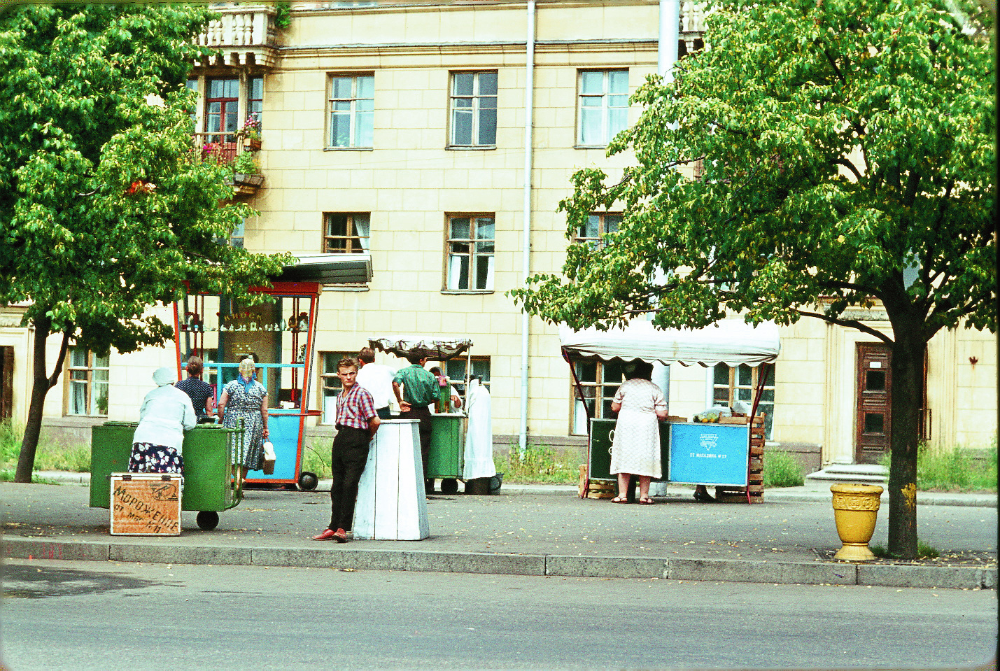
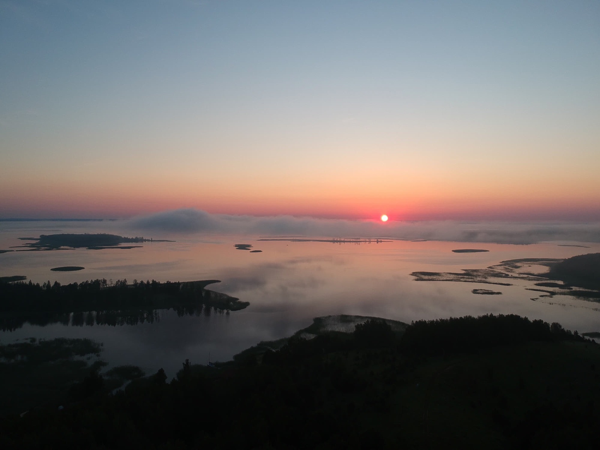
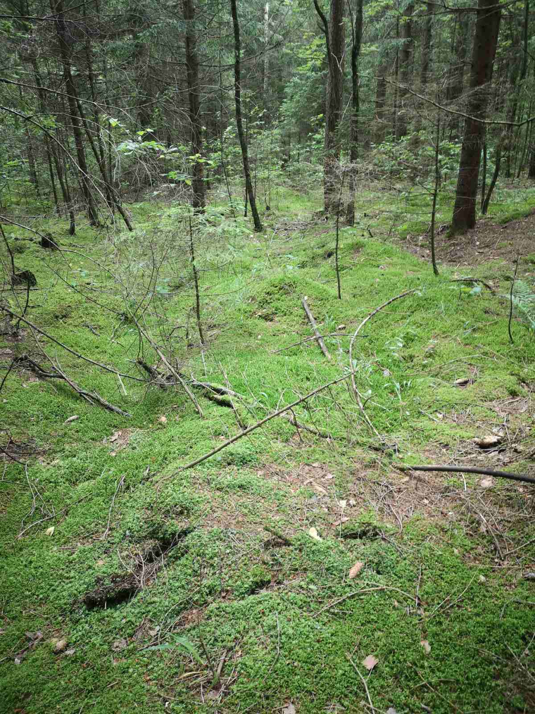
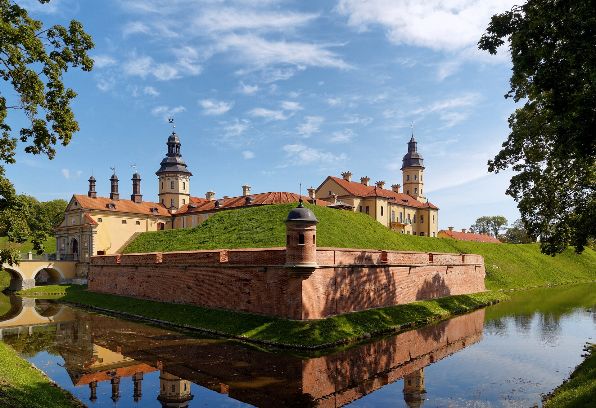
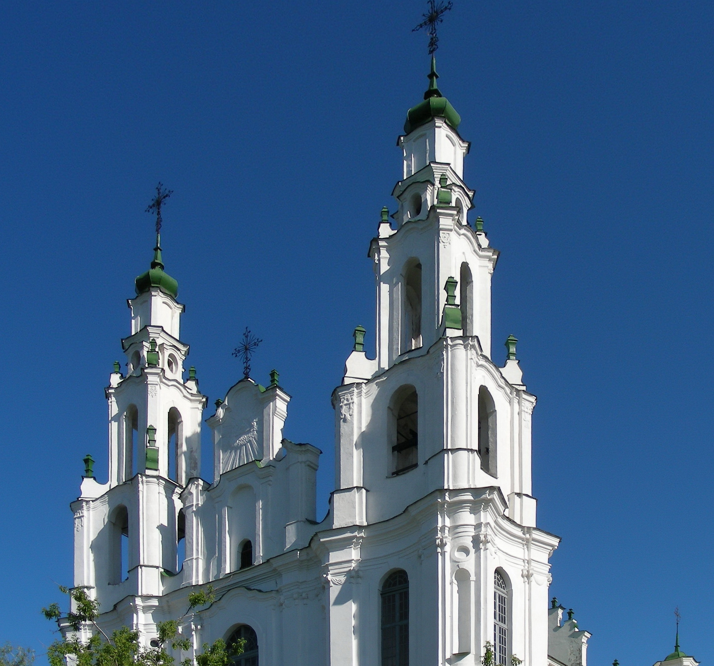
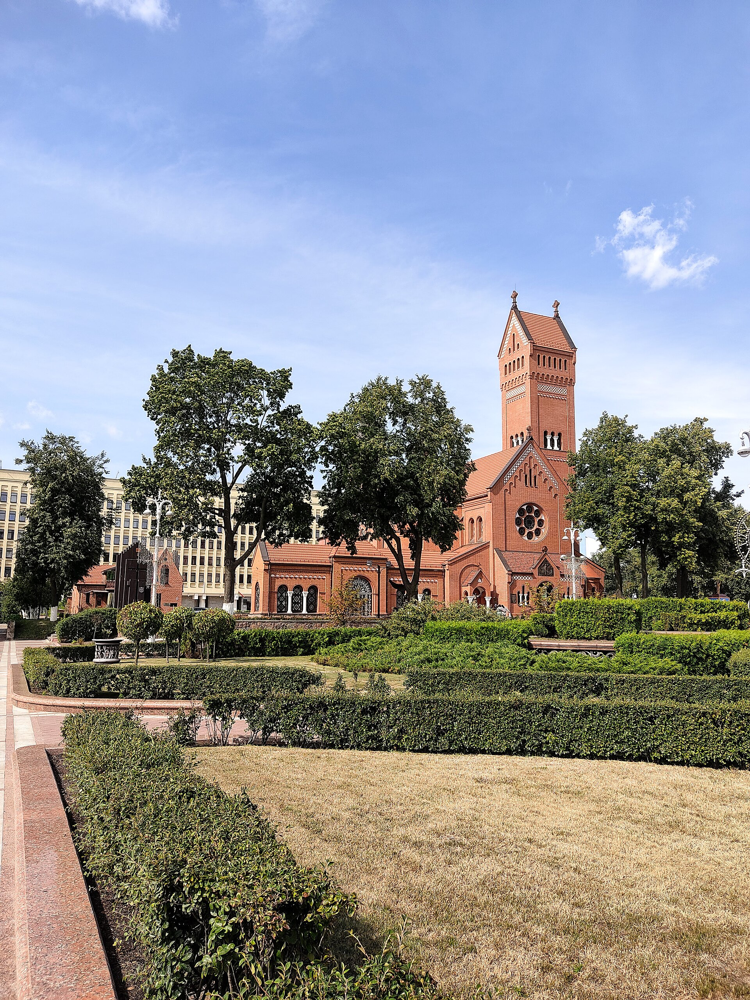
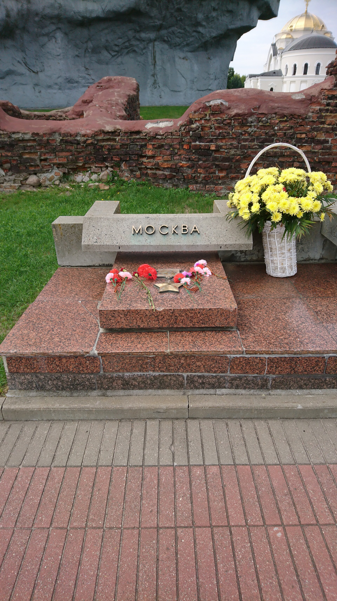

The European bison 🦬
The zubr is the national animal of Belarus. It lives in Belovezhskaya Pushcha, the oldest forest in Europe.
🇧🇾 Belarus
Добро пожаловать · Welcome
A small country in the centre of Europe — famous for its forests, blue lakes and tasty food.

Minsk
about 2 million people9.2 million
spread across the whole country207,600 km²
one of the largest in EuropeBelarusian & Russian
both are officialBelarusian ruble
short code: BYN5 countries
Russia, Ukraine, Poland, Lithuania, Latvia3 July
big parades and fireworks
The zubr is the national animal of Belarus. It lives in Belovezhskaya Pushcha, the oldest forest in Europe.

There are about 11,000 lakes in the country. The Braslav Lakes are the most beautiful, and Lake Narach is the biggest.

Almost half of Belarus is covered by forests. The highest point is only 346 m, so the country is very flat.







Potatoes are the most important food in Belarus. The most famous dish is draniki — fried potato pancakes, usually served with sour cream.